4人 Team Project
2021.05.01 ~ 2021.05.11
sist 운영 관리 시스템
"데이터베이스 프로젝트"
개발 환경
| 개발환경 | 버전 |
|---|---|
| 2S version(platform) | Windows 10 |
| JAVA version(Language) | JDK 1.8 |
| Eclipse version(Development tool) | Mars.2.Release(4.5.2) / Neon 1a Release |
개요
1. 회사 직원들의 인적사항, 일정, 급여 등을 한눈에 확인할 수 있는 프로그램
2. 이 프로그램을 사용하여 기존의 전산 관리 시스템(연차, 게시판, 스케줄, 근태 관리 등)과 유사한 시스템을 이용하는 프로그램
목적
1. 기존의 전산 관리 시스템 다른 기능을 추가하여 차별성을 높이고, 보다 나은 서비스를 제공한다.
2. 근태 관리나 연차 신청, 혹은 직원들을 위한 커뮤니티 게시판을 한번에 이용할 수 있기 때문에 기존의 전산 관리 시스템보다 더 편리한 환경을 제공한다.
3. 기존에는 오프라인에서만 이용할 수 있었던 환경이었으나, 온라인으로 이용할 수 있게 만듦으로써 직원들에게 편의성을 제공한다.
사용 기술
| 기술 분야 | 상세 내용 |
|---|---|
| 파일 입출력 | BufferedReader, Writer(new FileReader, Writer( “path” ) |
| 컬렉션 | ArrayList<T> - ArrayList를 활용하여 더미데이터를 보다 쉽게 사용할 수 있도록 하였다. - ArrayList.add / ArrayList.remove 등을 활용하여 데이터를 새로 추가하거나 삭제할 수 있도록 하였다. |
| 캘린더 | Calendar - Calendar 타입의 now 변수를 선언하여, 게시글을 새로 작성할 때 그 게시글에 날짜를 저장해줄 수 있도록 하였다. - Day_of_week과 Calendar.Year, Calendar.Month 등을 활용하여 직원들의 스케줄을 파악하기 쉽도록 만들었다. |
| Random, Math 함수 | 더미 데이터를 생성하기 위한 Random, Math 함수 |
핵심업무
관리자/교사/교육생
| 업무 | |
|---|---|
| 관리자 | 교사 계정 관리 |
| 개설 과정 관리 | |
| 교육생 관리 | |
| 시험 관리 및 성적 조회 | |
| 출결 관리 및 출결 조회 | |
| 구인공고 관리 | |
| 자격증 일정 관리 | |
| 취업 현황 관리 | |
| 상담일지 | |
| 만족도 조사 | |
| 교육종료 교육생 관리 | |
| 교재 관리 | |
| 교사 | 강의 스케줄 조회 |
| 출결 관리 및 출결 조회 | |
| 시험 및 배점 관리 | |
| 성적 정보 관리 | |
| 상담일지 관리 | |
| 만족도 조사 결과 조회 | |
| 교육생 | 성적 조회 |
| 출결 관리 및 출결 조회 | |
| 구인 공고 조회 | |
| 자격증 일정 조회 | |
| 취업 현황 조회 | |
| 만족도 조사 |
구동화면
로그인_관리자/교사/교육생
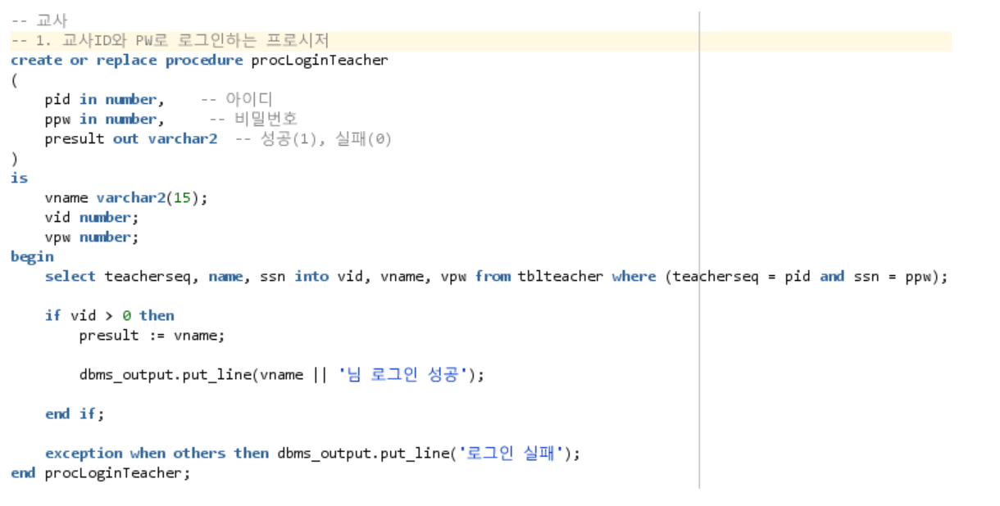
[결과]

관리자_교사 계정 관리
- 관리자는 교사 계정을 조회/등록/수정/삭제를 할 수 있습니다.
[교사 계정 조회]
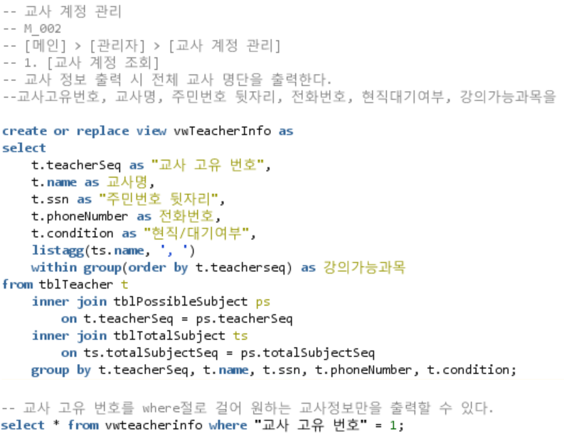[결과]
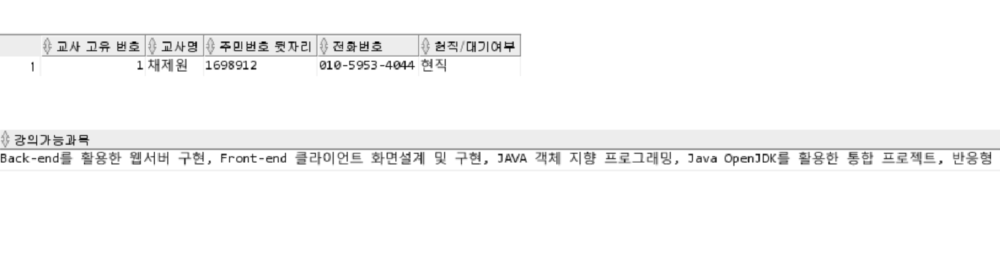[교사 계정 수정]
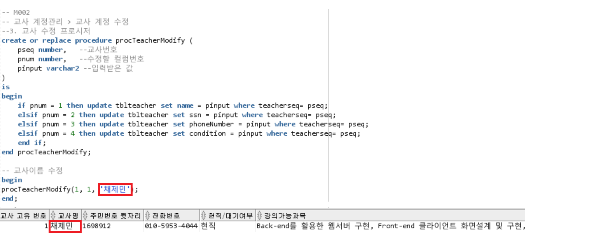관리자_개설과정 관리
- 관리자는 개설 과정을 조회/등록/수정/삭제를 할 수 있습니다.
[개설과정 조회]
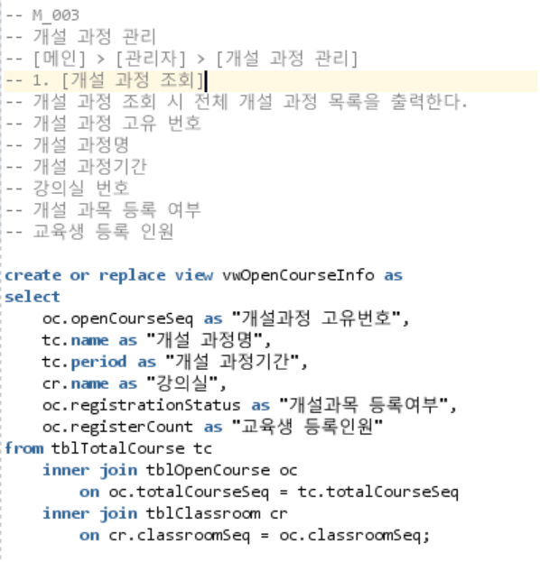[결과]
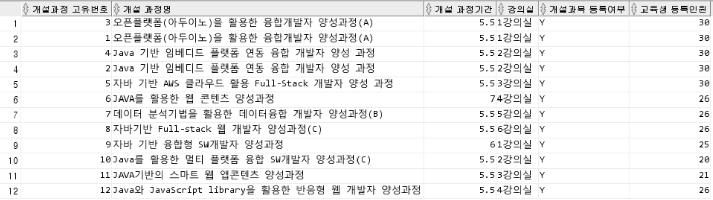[개설과정 수정]
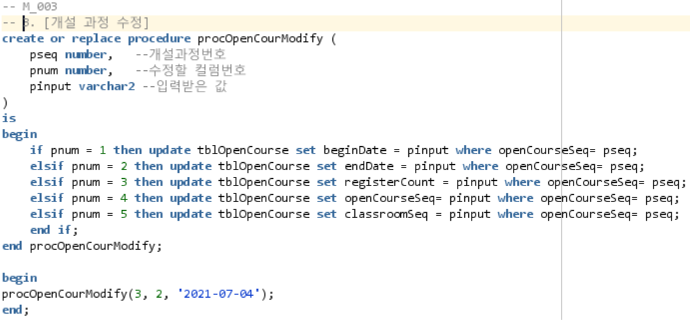[결과]
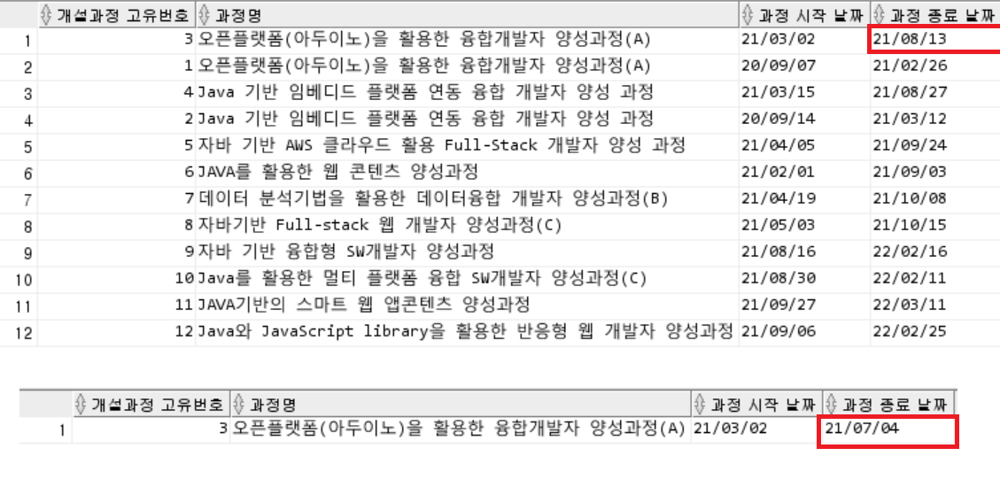- 특정 개설과정(3번)의 종료 날짜를 2021-07-04일로 수정해 보았습니다.
관리자_교육종료교육생 관리
- 관리자는 과정이 종료된 교육생들을 교육종료교육생 테이블로 이동시켜 현수강생들과 분리하여 관리를 할 수 있습니다.
[교육 종료 교육생 관리]
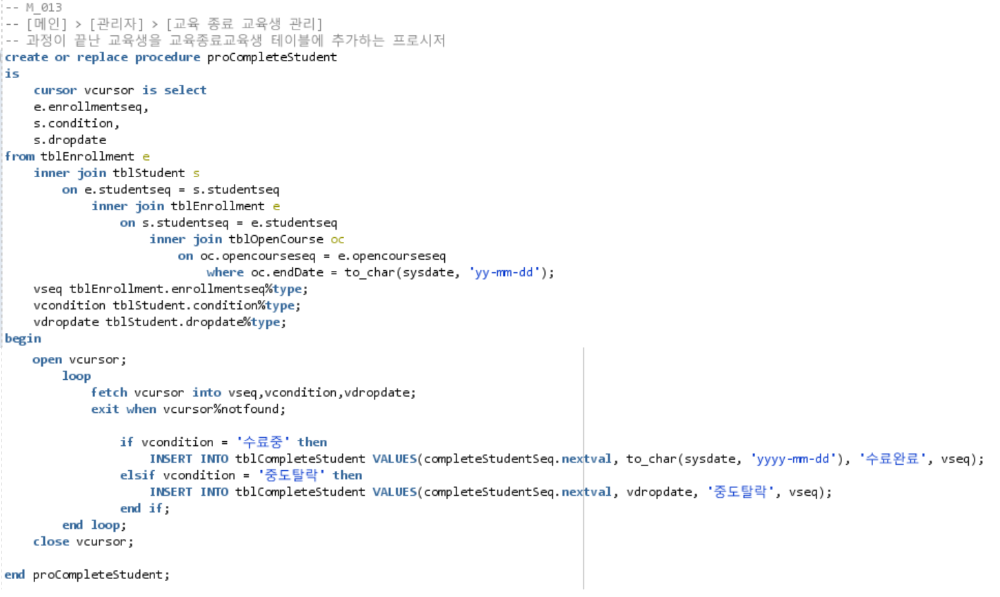[결과]
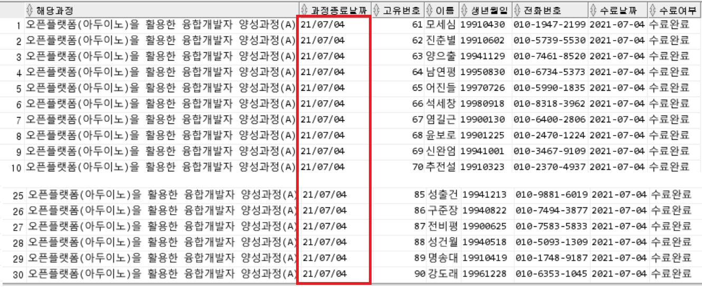- 관리자는 개설과정의 종료날짜가 되면 교육생들을 종료교육생 테이블로 이동시켜야합니다.
- 프로시저를 이용하여 개설 과정 종료날짜가 현 시점보다 전에 있으면 해당 교육생들을 종료교육생 테이블로 이동시킬 수 있습니다.
교사_교육생출결관리
[담당 과정 조회] > [출결 현황 조회]
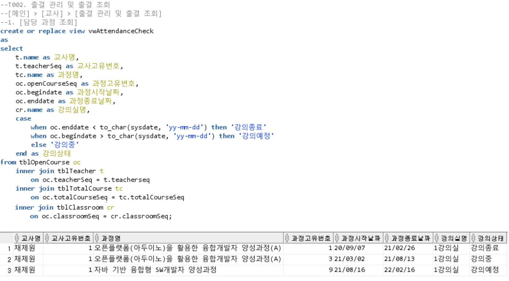
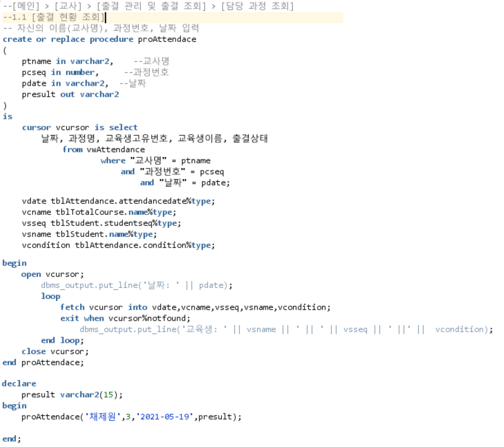
[결과]
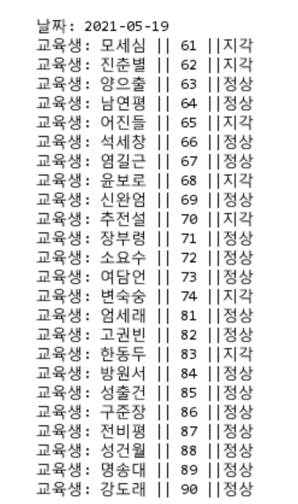- 관리자는 개설과정의 종료날짜가 되면 교육생들을 종료교육생 테이블로 이동시켜야합니다.
- 프로시저를 이용하여 개설 과정 종료날짜가 현 시점보다 전에 있으면 해당 교육생들을 종료교육생 테이블로 이동시킬 수 있습니다.
적용 기술
| 2S version(platform) | Windows 10 |
| JAVA version(Language) | JDK 1.8 |
| Eclipse version(Development tool) | Mars.2.Release(4.5.2) / Neon 1a Release |
느낀점
1. 기존의 전산 관리 시스템 다른 기능을 추가하여 차별성을 높이고, 보다 나은 서비스를 제공한다.
2. 근태 관리나 연차 신청, 혹은 직원들을 위한 커뮤니티 게시판을 한번에 이용할 수 있기 때문에 기존의 전산 관리 시스템보다 더 편리한 환경을 제공한다.
3. 기존에는 오프라인에서만 이용할 수 있었던 환경이었으나, 온라인으로 이용할 수 있게 만듦으로써 직원들에게 편의성을 제공한다.